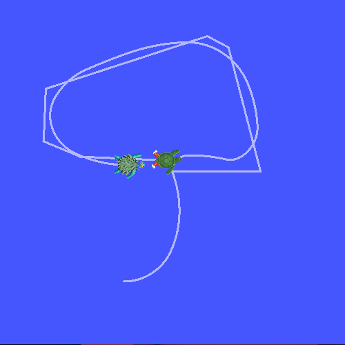

介绍``tf2``
目标： 运行一个turtlesim演示，并在使用turtlesim的多机器人示例中展示tf2的部分功能。
教程级别： 中级
时间: 10分钟
安装演示程序
让我们首先安装演示包及其依赖项。
sudo apt-get install ros-humble-turtle-tf2-py ros-humble-tf2-tools ros-humble-tf-transformations
# Clone and build the geometry_tutorials repo using the branch that matches your installation
git clone https://github.com/ros/geometry_tutorials.git -b ros2
运行演示
既然我们已经安装了``turtle_tf2_py``教程包，让我们来运行演示。首先，打开一个新的终端并：doc:配置你的ROS 2环境，这样``ros2``命令就能正常工作了。然后运行以下命令：
ros2 launch turtle_tf2_py turtle_tf2_demo.launch.py
你将看到turtlesim启动并有两只海龟。

在第二个终端窗口中输入以下命令：
ros2 run turtlesim turtle_teleop_key
一旦turtlesim启动，你可以使用键盘的箭头键驱动中央的海龟在turtlesim中移动，选择第二个终端窗口，这样你的按键操作将被捕捉到来驱动海龟。
你会看到一只海龟不断地跟随着你驱动的海龟移动。
发生了什么事？
此演示使用tf2库创建了三个坐标系：``world``坐标系、``turtle1``坐标系和``turtle2``坐标系。本教程使用tf2广播器发布乌龟坐标系，并使用tf2监听器计算乌龟坐标系之间的差异，并使一只乌龟跟随另一只乌龟移动。
tf2工具
现在让我们看看tf2是如何用于创建这个演示的。我们可以使用``tf2_tools``来查看tf2在幕后的工作。
1 使用view_frames
``view_frames``会创建一个图示，显示tf2通过ROS广播的坐标系。
ros2 run tf2_tools view_frames
您将看到：
Listening to tf data during 5 seconds...
Generating graph in frames.pdf file...
这里有一个 tf2 监听器在监听通过 ROS 广播的帧，并绘制连接帧的树形结构。要查看树形结构，请使用您喜欢的 PDF 查看器打开生成的“frames.pdf”文件。

这里我们可以看到由 tf2 广播的三个帧：world、turtle1``和``turtle2。world 是``turtle1``和``turtle2``帧的父级。``view_frames``还报告了一些诊断信息，包括接收到的最旧和最新帧变换的时间以及用于调试目的将 tf2 帧发布到 tf2 的速度。
2 使用 tf2_echo
tf2_echo 报告了在 ROS 上广播的任意两个帧之间的变换。
用法：
ros2 run tf2_ros tf2_echo [source_frame] [target_frame]
让我们看看“turtle2”相对于“turtle1”帧的变换，它等同于：
ros2 run tf2_ros tf2_echo turtle2 turtle1
当“tf2_echo”监听器接收到在ROS 2上广播的帧时，您将看到变换显示出来。
At time 1622031731.625364060
- Translation: [2.796, 1.039, 0.000]
- Rotation: in Quaternion [0.000, 0.000, 0.202, 0.979]
At time 1622031732.614745114
- Translation: [1.608, 0.250, 0.000]
- Rotation: in Quaternion [0.000, 0.000, 0.032, 0.999]
当您驱动乌龟移动时，您将看到变换随着两只乌龟相对移动而改变。